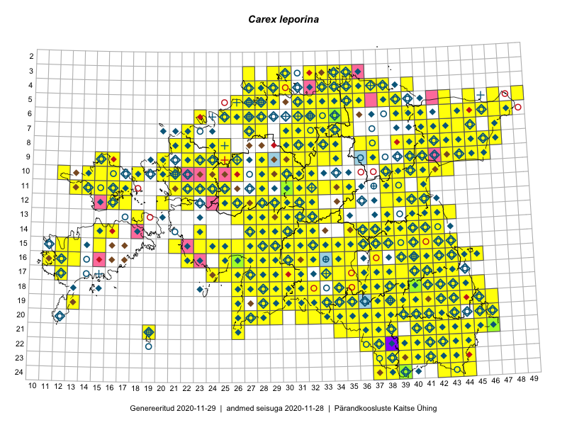

Carex leporina
Uuendatud: 2016-12-01
Kaardile koondatud taksonid: Carex leporina L.

Kaart põhineb 403 kirjel.
Kuvatud viited 20 esimesele andmebaasikirjele, ülejäänud PlutoFis
- Thea Kull: 2015-07-07: 16-40: ala
- Peedu Saar, Toomas Kukk: 2015-05-26: 10-24: ala
- Tiit Hallikma, Toomas Kukk: 2015-07-21: 05-45: ala
- Ott Luuk, Peedu Saar: 2015-09-03: 03-30: ala
- Peedu Saar, Ott Luuk: 2015-06-21: 14-41: ala
- Ott Luuk, Peedu Saar: 2015-07-27: 11-35: ala
- Peedu Saar: 2015-07-04: 18-45: ala
- Peedu Saar: 2015-07-04: 18-44: ala
- Peedu Saar: 2015-07-14: 15-38: ala
- Peedu Saar: 2015-07-15: 15-39: ala
- Ott Luuk, Peedu Saar: 2015-08-13: 24-43: ala
- Tiit Hallikma, Toomas Kukk: 2015-07-22: 05-49: ala
- Peedu Saar, Eerik Leibak: 2015-07-30: 15-42: ala
- Peedu Saar, Eerik Leibak: 2015-07-30: 16-41: ala
- Toomas Kukk, Kersti Tambets, Sten Mander, Janika Sammasto, Timo Luhamäe: 2014-07-29: 18-45: ala
- Ott Luuk, Peedu Saar: 2015-08-12: 23-43: ala
- Toomas Kukk, Eerik Leibak: 2015-08-11: 09-16: ala
- Toomas Kukk, Eerik Leibak: 2015-07-29: 16-45: ala
- Peedu Saar, Liina Oja: 2015-07-20: 08-44: ala
- Peedu Saar, Liina Oja: 2015-07-21: 06-44: ala